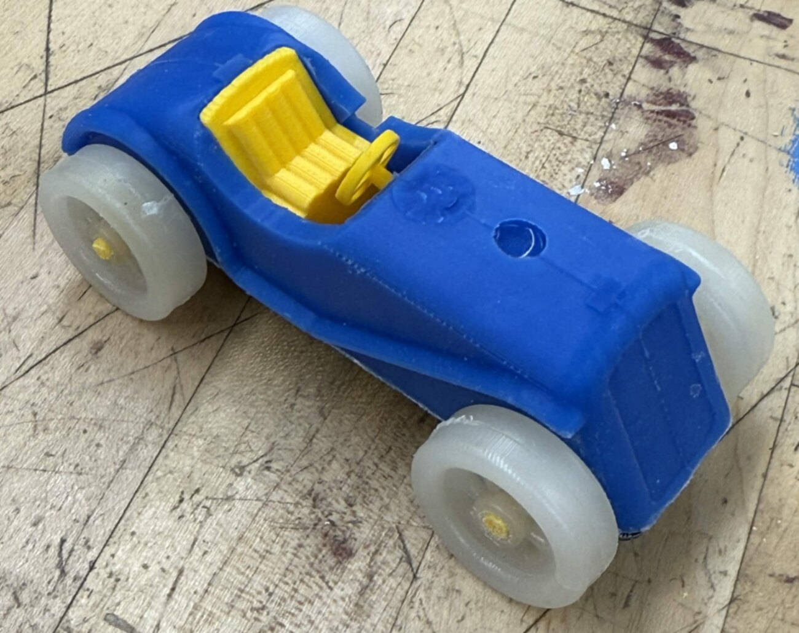
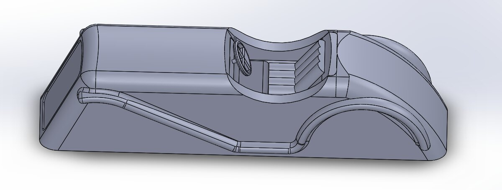
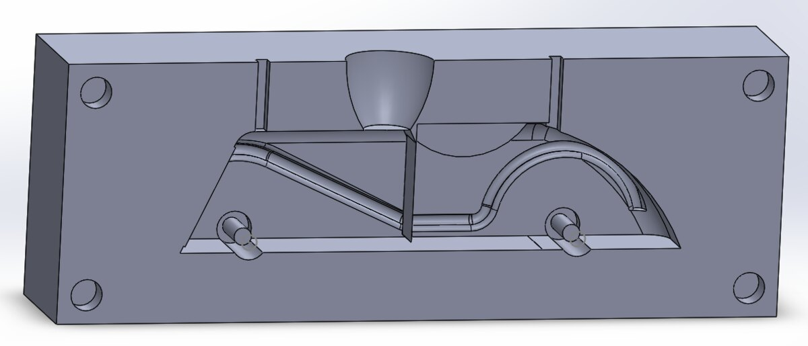
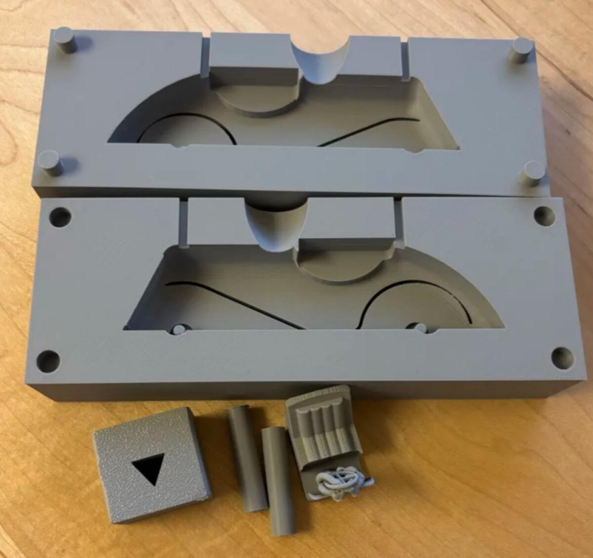
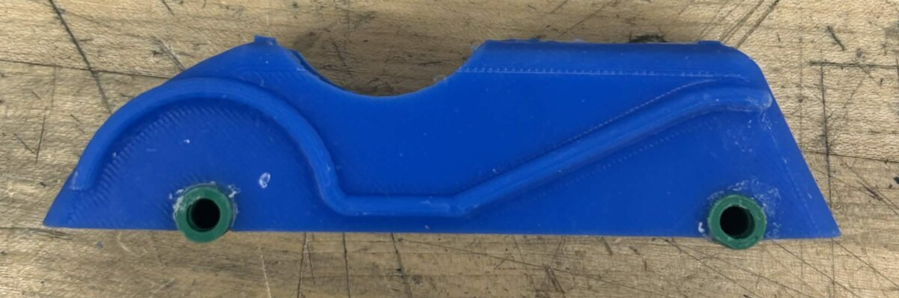
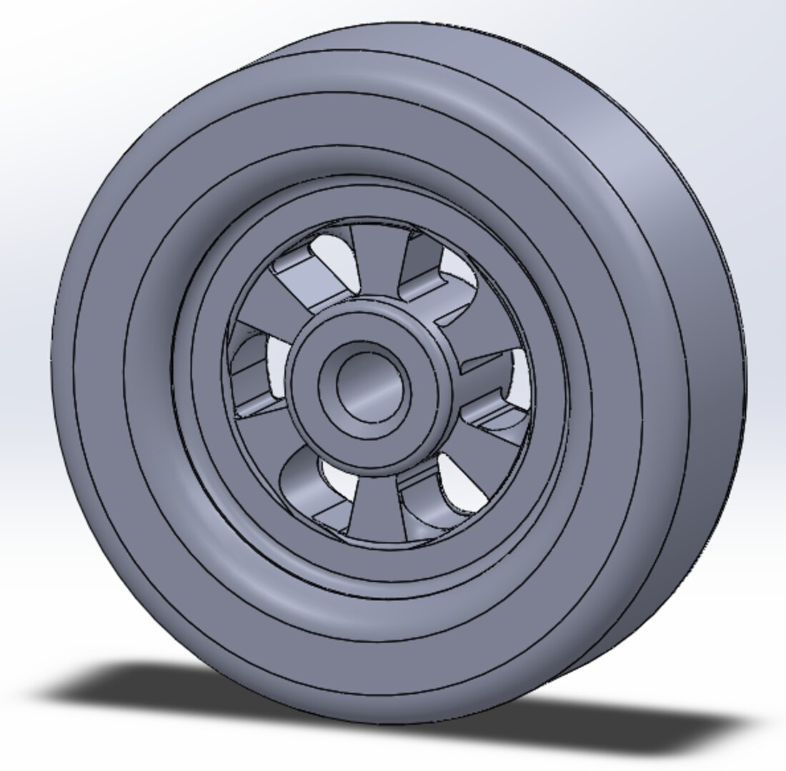
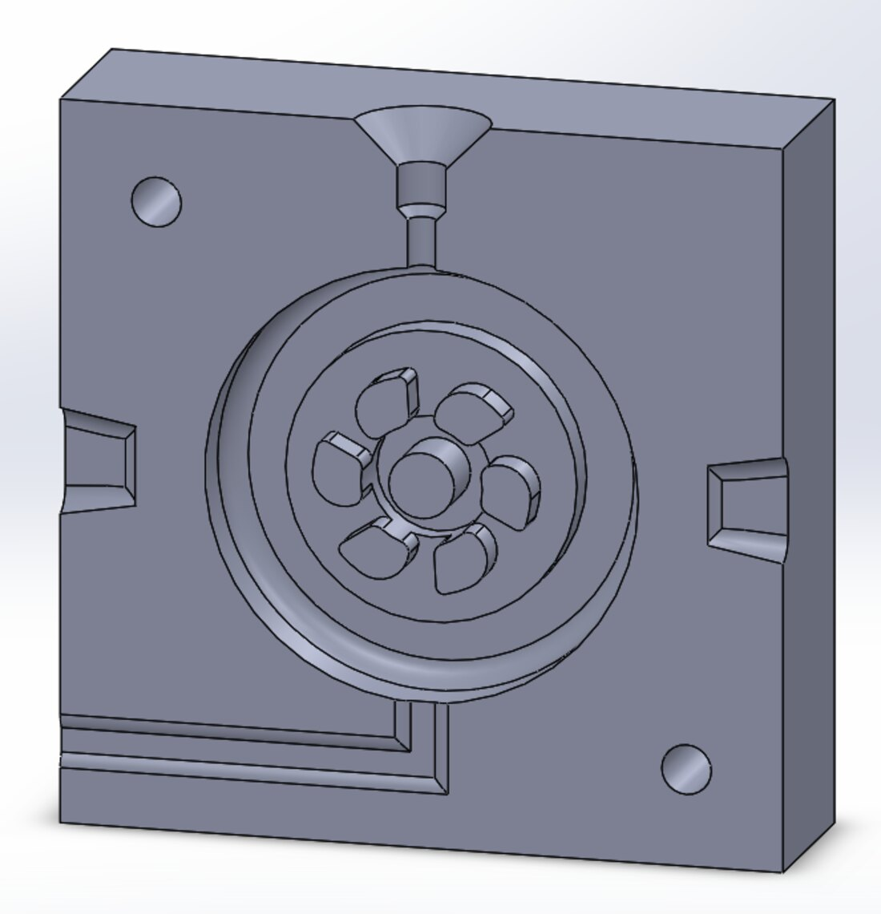
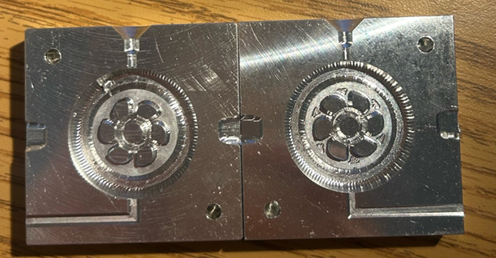
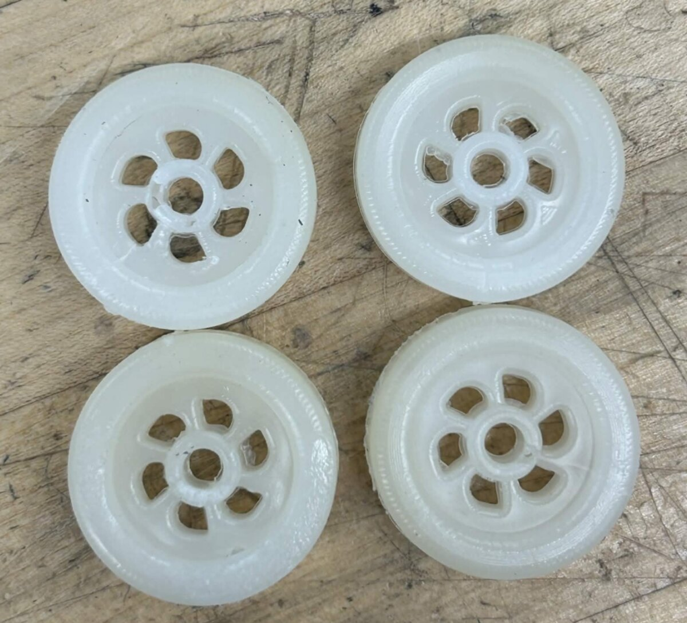

Model race car: casting and injection molding
One object, two tooling routes — a silicone-cast body from a 3D-printed mold, and injection-molded wheels from CNC-machined aluminum.

Brief
Design and fabricate a model of an early 20th-century race car using the processes covered in the course: machining, silicone casting and injection molding. We chose the Maserati Tipo V4 for its long curved body and spoked wheels — two shapes that push toward different manufacturing routes, which is what made it worth building.
Body: 3D-printed mold, silicone cast
The body is a swept, undercut shape that cannot be machined in one setup and would show layer lines if printed directly. We modeled it in SolidWorks, derived a two-part mold from the solid, printed the mold in PLA, and cast the body in silicone — the print carries the geometry, the casting carries the surface finish.




Wheels: machined aluminum tooling, injection molded
The wheels are the opposite problem — small, repeated four times, with thin spokes and a tread that needs to come out crisp. That is an injection molding part, which meant designing an aluminum mold in CAD, generating toolpaths, and machining it on the Tormach before a single wheel existed.




What the project teaches
The interesting part is that the same car demanded two completely different tooling strategies, and the choice fell out of the geometry rather than preference: an undercut one-off body wants a soft cast from cheap printed tooling, while four identical thin-featured parts justify cutting metal.
Where the process showed its limits
Both routes leave their signature on the part. The cast body carries the texture of the printed mold, because a PLA cavity cannot be smoother than its own layer lines without post-processing — sanding and sealing the cavity before casting would transfer a better finish. The molded wheels show the gate witness and the parting line, which a relocated gate or a vent at the last-filled feature would reduce.
The broader lesson is that tooling quality sets a ceiling on part quality that no amount of care in the final process can lift. Time spent finishing the mold pays back once per part, every part.
- Course
- MECE E3610 Materials & Processes in Manufacturing
- Dates
- Spring 2026
- Team
- 4 people
- Tools
- SolidWorks, CAM, Tormach CNC, silicone casting, injection molding